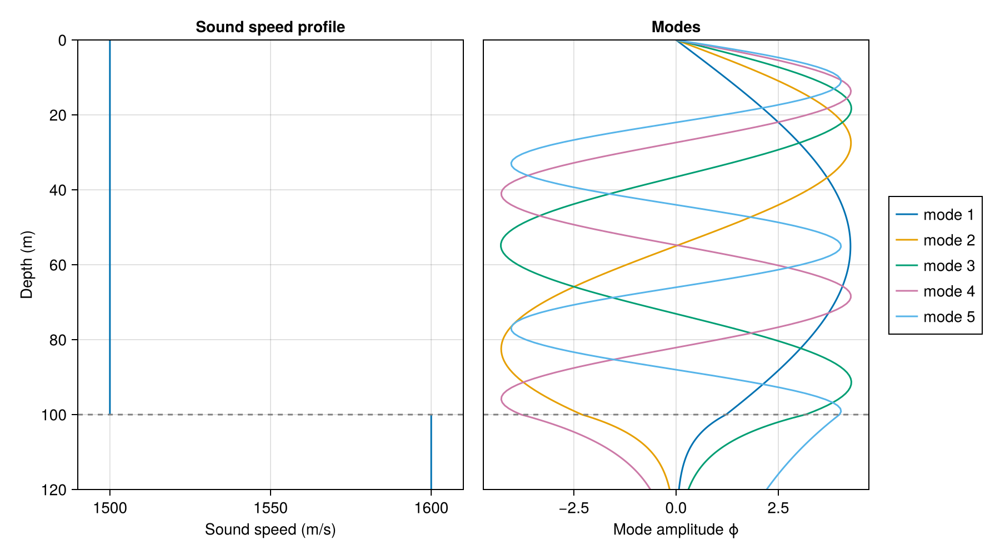
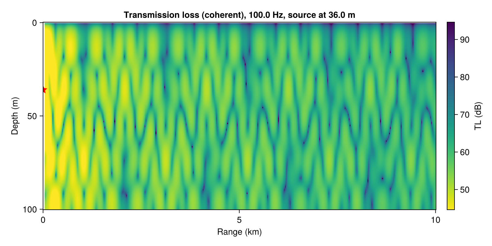
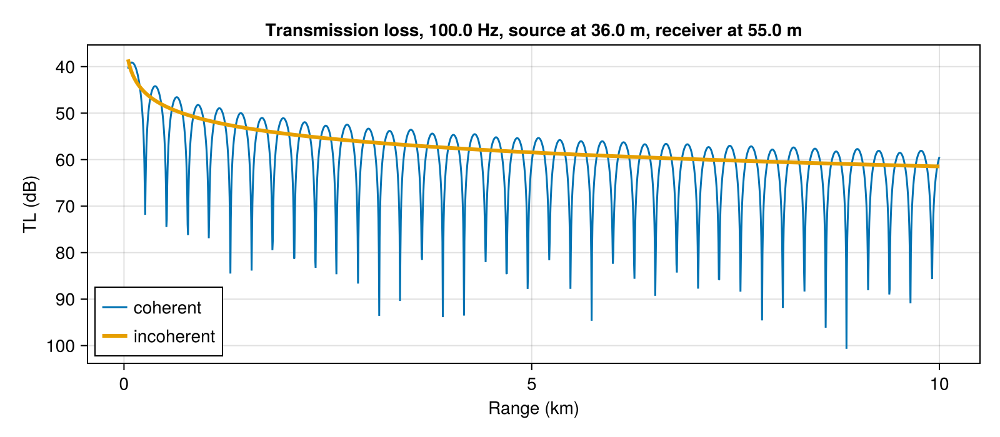
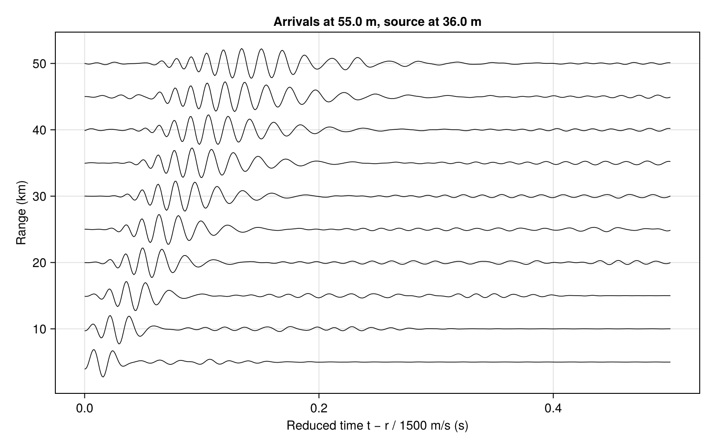
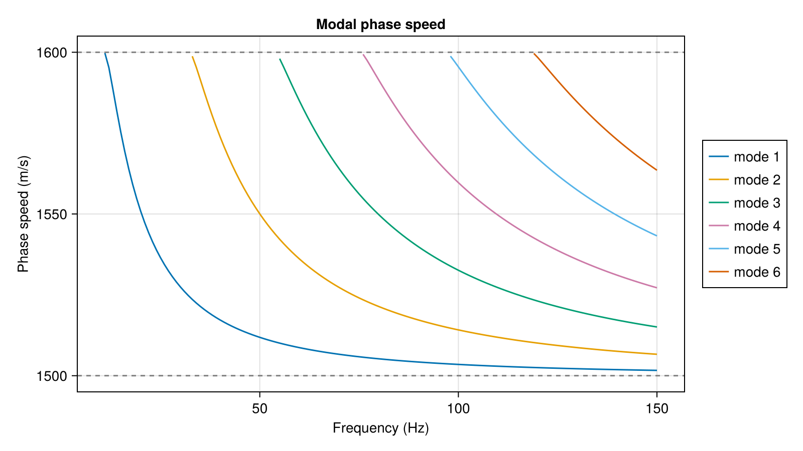
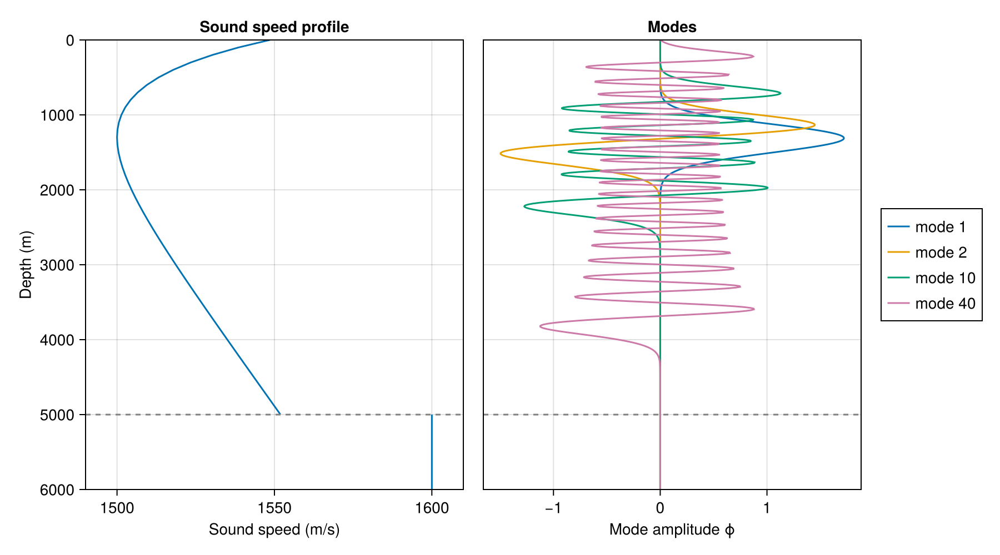

Getting started
This guide goes from an environment to modes, to a pressure field, to a pulse, using the Pekeris waveguide throughout: 100 m of water at 1500 m/s over a 1600 m/s seabed. Every block on this page is run when the documentation is built, and the output shown, figures included, is what it produced.
The figures come from Kraken.jl's plotting functions, which load with any Makie backend:
using Kraken
using CairoMakie # activates Kraken's plotting extensionSolve for the modes
An environment comes from three matrices in the Acoustics Toolbox .env layout (see Environments). The standard environments return them ready-made:
using Kraken
env = UnderwaterEnv(pekeris_env()...)
sol = kraken_jl(env, 100.0) # frequency in HzNormalModeSolution{Float64}(5 modes)kraken_jl returns a NormalModeSolution. Its kr field holds the horizontal wavenumbers in 1/m, largest first. The largest belongs to the mode that travels most nearly horizontally:
sol.kr5-element Vector{Float64}:
0.41790772188869
0.41496285015496376
0.4099680381123277
0.4028501245236465
0.3938075017328904The phase speed of each mode, ω/kᵣ, lies between the water and seabed sound speeds. That is what makes a mode trapped:
2π * 100.0 ./ sol.kr5-element Vector{Float64}:
1503.4862908929729
1514.156099716684
1532.6036966467245
1559.683099169745
1595.4966016470937Mode shapes
sol.modes holds one column per mode, sampled on the solver's depth mesh. To evaluate the modes at depths of your choosing, use mode_amplitudes, which interpolates between mesh points and continues each mode into the seabed as the decaying exponential it is there:
mode_amplitudes(sol, [0.0, 25.0, 50.0, 100.0, 120.0])5×5 Matrix{Float64}:
0.0 0.0 0.0 0.0 0.0
2.78797 4.2322 3.58866 1.14887 -1.66999
4.21856 1.19911 -3.91971 -2.21244 3.03849
1.22193 -2.30254 3.16364 -3.78903 3.99557
0.0700504 -0.157568 0.300307 -0.628021 2.21371plot_modes draws them beside the sound-speed profile. Below the dashed seafloor each mode decays exponentially into the seabed, and the higher modes, nearer their cutoff, reach further:
plot_modes(sol; modes=1:5)
Every mode is zero at the pressure-release surface. Mode m crosses zero m − 1 times in the water column. The modes are normalized so that $\int \psi_m^2/\rho \, dz = 1$, including the part of the integral in the seabed.
Pressure field and transmission loss
transmission_loss sums the modes into the field of a point source and returns it in dB, with receiver depths down the rows and ranges across the columns. For a source at 36 m and one receiver at 55 m:
ranges = 1_000.0:1_000.0:10_000.0
round.(transmission_loss(sol, ranges, 36.0, 55.0); digits=1)1×10 Matrix{Float64}:
55.0 52.5 53.3 55.7 60.6 80.5 63.3 59.5 57.7 59.4The level does not fall smoothly with range, because the modes interfere. An incoherent sum adds their intensities instead of their complex amplitudes. That discards the interference pattern and leaves the mean trend, which is often what you want when the pattern is too fine to resolve:
round.(transmission_loss(sol, ranges, 36.0, 55.0; mode=:incoherent); digits=1)1×10 Matrix{Float64}:
51.5 54.5 56.2 57.5 58.5 59.2 59.9 60.5 61.0 61.5acoustic_field gives the complex pressure itself, on any grid of ranges and depths:
p = acoustic_field(sol, 1_000.0:10.0:10_000.0, 36.0, 0.0:1.0:100.0)
size(p)(101, 901)Over the whole water column the interference pattern is easier to see than to read off a table. plot_tl computes the TL on a grid and draws it, with the source marked:
plot_tl(sol, 50.0:25.0:10_000.0, 36.0, 0.0:0.5:100.0)
plot_tl_range takes a single receiver depth and draws the coherent and incoherent sums together. The incoherent curve is the mean level the interference oscillates about:
plot_tl_range(sol, 50.0:5.0:10_000.0, 36.0, 55.0)
The phase convention is KRAKEN's, exp(i(ωt − kᵣr)), and the amplitude is normalized to a source of unit pressure at 1 m, so field.exe's output can be compared with no rescaling. The Validation page makes that comparison.
A pulse
A single frequency gives interference; a band of frequencies gives arrivals in time. broadband_field solves the environment at each frequency, and synthesize_pulse Fourier-synthesizes a time series from the result. t_reduce starts the time axis at the earliest arrival any mode could make, so a short window can hold a pulse that has travelled 5 km:
freqs = 5.0:5.0:300.0
P = broadband_field(env, freqs, 5_000.0, 36.0, 55.0)
t = 0:0.001:0.6
pulse = synthesize_pulse(P[:, 1, 1], freqs, t; t_reduce=5_000.0 / 1500.0)
t[argmax(abs.(pulse))] # seconds after r/c0.003Each frequency is an independent solve. A frequency that supports no trapped modes, or zero, contributes nothing rather than an error, which is what a band that starts near the lowest mode's cutoff needs.
plot_arrivals does this at a series of ranges and stacks the results into a record section. Here the source spectrum is a band around 60 Hz, set with spectrum. The pulse stretches out as it travels, because its modes and frequencies travel at different group speeds, and by 50 km the arrival is several times as long as it was at 5 km:
band(f) = exp(-((f - 60) / 20)^2)
plot_arrivals(env, 1.0:1.0:200.0, 5_000.0:5_000.0:50_000.0, 36.0, 55.0, 0:0.001:0.5; spectrum=band)
Group speeds, by differentiation
The solver can be differentiated, so a derivative of its output is a derivative in the calculus sense rather than a finite difference. Group speed is $c_g = \partial\omega/\partial k_r$, which is one derivative with respect to frequency. That is a job for forward mode:
using ForwardDiff
dkr_df = ForwardDiff.derivative(f -> kraken_jl(env, f).kr, 100.0)
group_speeds = 2π ./ dkr_df5-element Vector{Float64}:
1497.1530895147482
1488.3524438018437
1473.1481278261722
1451.9700549630425
1441.6397112073812The group speeds lie below the water's 1500 m/s: in this waveguide, energy travels more slowly than sound in the water does.
The dispersion behind these speeds shows across frequency. plot_dispersion solves at each frequency and draws each mode's phase speed. A mode appears at its cutoff, where its phase speed is the seabed's 1600 m/s, and falls towards the water's 1500 m/s as frequency rises. The steeper the curve, the more its group speed differs from its phase speed:
plot_dispersion(env, 5.0:1.0:150.0; nmodes=6)
For gradients with respect to many parameters at once, a whole sound-speed profile for example, reverse mode is the tool. Automatic differentiation covers both modes and works through a full inversion.
Beyond Pekeris
The same calls work for any environment. Here is the Munk deep-water sound channel at 50 Hz, which traps about a hundred modes:
munk = kraken_jl(UnderwaterEnv(munk_env()...), 50.0)NormalModeSolution{Float64}(102 modes)The low modes are trapped around the sound-channel axis at 1300 m and never touch the surface or the bottom. The higher modes span more and more of the water column:
plot_modes(munk; modes=[1, 2, 10, 40])
The Validation page shows this environment's full transmission-loss field, with its shadow zone and convergence zones, computed by both Kraken.jl and Fortran KRAKEN.
Layered seabeds, rigid or vacuum boundaries, other sound-speed interpolations, and attenuation are all options of UnderwaterEnv; see Environments. The Pekeris waveguide also has a closed-form solution, PekerisUnderwaterEnv, which the finite-difference solver reproduces:
closed_form = find_kr(PekerisUnderwaterEnv(1500.0, 1600.0, 1000.0, 1500.0, 100.0), 100.0)
maximum(abs.(closed_form .- sol.kr) ./ closed_form)7.2944702946527695e-9Plotting
Plotting is a package extension, so it costs nothing until a Makie backend is loaded (using CairoMakie for files, using GLMakie for interactive windows). The figure-level functions each return a Makie.Figure:
| Function | Draws |
|---|---|
plot_modes | the sound-speed profile beside the mode shapes |
plot_ssp | one sound-speed profile, or several overlaid |
plot_tl | transmission loss over range and depth |
plot_tl_range | transmission loss against range at one depth |
plot_dispersion | modal phase speed against frequency |
plot_arrivals | broadband arrivals at a series of ranges |
plot_ssp!, plot_tl! and plot_tl_range! draw into an axis you already have and take plain arrays. Use them to build your own layouts, or to draw data from elsewhere with the same styling; the Validation page uses them to put field.exe's output beside Kraken.jl's.